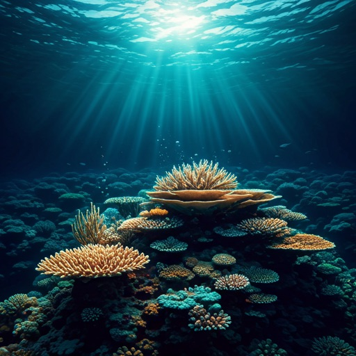
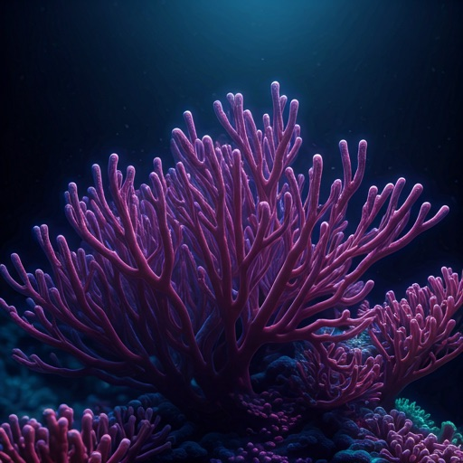

Environmental Archetype 04
Oceanic Resonance
Immerse your interface in the hydraulic elegance of the deep. A hybrid of tactile minimalism and fluid skeuomorphism, designed for sensory-rich digital curation.

HYDRODYNAMICS
The Bioluminescent Shift
Exploring the visual language of deep-sea organisms and their adaptive luminescence in digital environments.
water_drop
Viscosity Control
Adjustable motion tokens that simulate water resistance and surface tension for organic scrolling.

Coral Grids
Liquid Typography
Typefaces that breathe and expand based on the depth of the viewport. Designed for ultimate readability in immersive landscapes.
AETHERIS
Descend into the Abyss
2,500m
SURFACE DEPTH
12.4ms
FLUID LATENCY
89%
OPACITY BLUR
0.2g
GRAVITY PULL
waves
Stay within the tide.
Receive weekly curations of natural skeuomorphism and atmospheric design directly in your inbox.